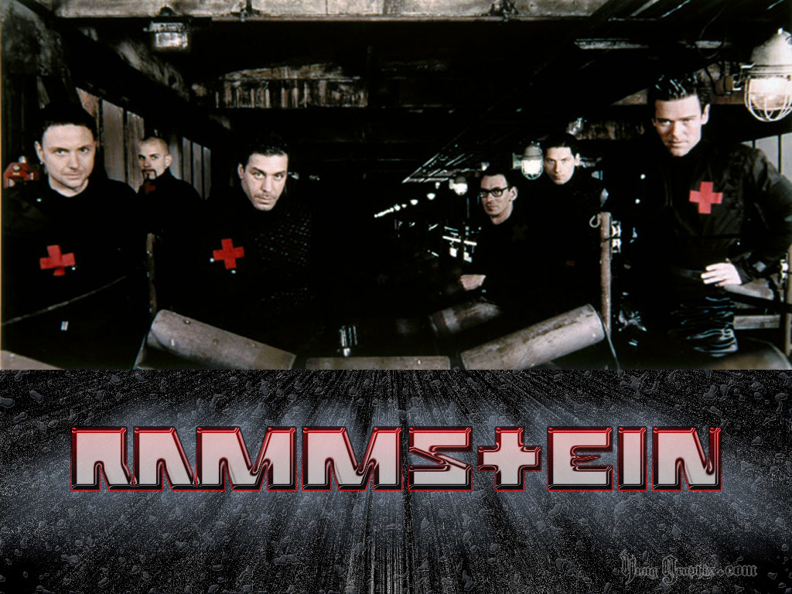

Biographie : Rammstein

Rammstein est un groupe de metal allemand formé en 1993 à Berlin, constitué depuis le début de six mêmes membres
originaires d'Allemagne de l'Est ; décrit comme appartenant au genre Neue Deutsche Härte, il en est le représentant le
plus connu.
Les paroles du groupe sont la plupart du temps en allemand, c'est d'ailleurs le groupe germanophone le plus vendeur dans
le monde avec près de 20 millions d'albums vendus2, mais elles intègrent parfois aussi des paroles en anglais, en
français, en espagnol ou encore en russe.
Connu pour ses concerts multipliant les effets pyrotechniques et des mises en scènes créatives, Rammstein a aujourd'hui
sorti six albums studio dont la musique est souvent considérée comme du Metal industriel, mais sa classification exacte
est discutée car elle intègre également de fortes influences de la musique électronique, du rock ou même de la pop,
d'autant qu'elle a beaucoup évolué au fil des albums. Il connaît le succès international depuis son deuxième album
Sehnsucht, en 1997, et a même réalisé pour la première fois une tournée mondiale entre 2009 et 2011 pour son sixième
album Liebe Ist Für Alle Da.
Ce succès s'est cependant vu accompagné dès le début de polémiques, notamment d'accusations associant le groupe au
nazisme en raison de rapprochements supposés dans son imagerie (ce qui est également le cas du groupe slovène Laibach
dont il s'inspire) et d'accusations d'incitation à la violence, liées à la fusillade du lycée Columbine. Rammstein a
cependant toujours nié fermement tout lien avec n'importe quelle forme de racisme et tout soutien à la violence, se
définissant avant tout comme des artistes ne cherchant aucunement à faire passer un quelconque message, et il est
aujourd'hui généralement admis que les controverses relèvent plutôt d'un goût pour la provocation et d'interprétations
malheureuses que d'un contenu idéologique.